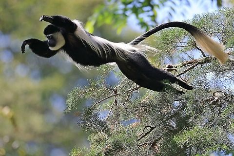

This is a species of Colobus Monkey called the Colobus Guereza Monkey.
They have a mix of white and black fur in adult hood but when first born they have white fur and due to there fur they have been sought for there fur pelts.
Zoo's have now been keeping these monkeys but before wouldn't due to there special diet.
They are only leaf eaters and will only eat exclusively a type of gastric leaf fermentation. In order to break down the leaves they have a multi-chambered stomachs like a cow.
Their name is from the Greek word Kolobos which means mutilated they are called that because of their thumbs they use to swing.
Their specific behavior is called arboreal which means they almost never go on the ground and live in troops with a dominate male.
